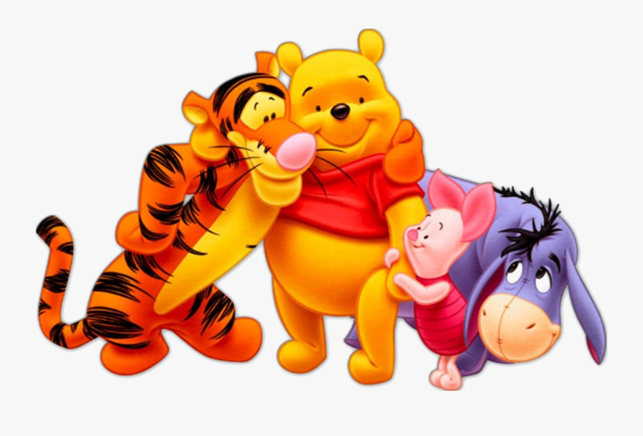

About Winnie-the-Pooh
Winnie-the-Pooh, also called Pooh Bear and Pooh, is a fictional anthropomorphic teddy bear created by English author A. A. Milne and English illustrator E. H. Shepard.
Winnie-the-pooh with his friends
History About Winnie-the-Pooh
- Erik Satie was a classy guy, wearing only gray suits and sometimes wearing a top hat.
- Erik Satie walked ten miles everyday.
- Erik Satie was friends and admired by Maurice Ravel and Claude Debussy.
- Erik Satie owned two pianos which he had stacked on top of each other. (Strange right?)
Pooh's other Adaptions
Erik Satie composed hundreds of pieces spanning many genres, here are a few of his most popular.